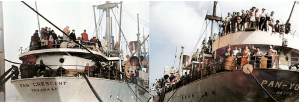

הספינות "פאן יורק" ו"פאן קרסנט" בלב ים


שלט ההנצחה המתוכנן בשבילי הים
חברות וחברי משפחת "הפאנים" היקרים,
על חופים אלה נכתב פרק הוד בתולדות הקמת המדינה. כ-15,500 מעפילים – הורינו וסבינו – הפליגו מבורגס שבבולגריה במבצע ההעפלה הגדול בהיסטוריה, כתשובה ניצחת לגירוש "אקסודוס". הם עברו מסע תלאות, חלמו על חופי הארץ ושרו את "התקווה" בדמעות לפני גירושם למחנות קפריסין.
"כל שלט הנצחה הוא יד זיכרון חיה – גשר שיחבר בין המטייל בשבילי הים לבין סיפור גבורת המעפילים."
כעת, במסגרת מיזם 30 שלטי ההנצחה לאורך חופי הארץ של ארגון מעפילי קפריסין, יש לנו הזדמנות להבטיח שסיפורן של "עצמאות" ו"קיבוץ גלויות" ייחקק לתמיד על החוף שאליו כה נכספו.
עדות מעפילי "הפאנים"
תעודת זהות היסטורית: "עצמאות" ו"קיבוץ גלויות"
| יציאה | בורגס, בולגריה | 27 בדצמבר 1947 |
|---|---|
| מעפילים | כ-15,500 מעפילים – מבצע ההעפלה המרוכז הגדול בהיסטוריה |
| המפגש בלב ים | כיתור בריטי בדרדנלים. הסדר לניווט ישיר לקפריסין למניעת אסון המוני (31.12.47) |
| קפריסין והתקומה | גרעין המעפילים הגדול במחנות קפריסין, שלחמו בהמשך במלחמת העצמאות |